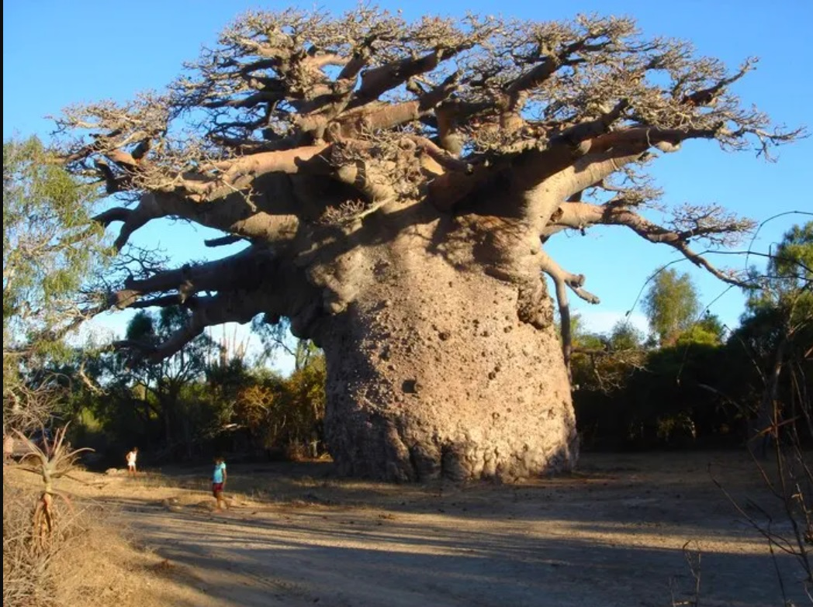

Баобаб — дерево-довгожитель. Воно живе близько 1000 років і виглядає як справжній гігант. Зростає в сухих саванах тропічної Африки, має діаметр 4.5-10 метрів і досягає у висоту 25 метрів. У баобаба немає річних кілець, тому тривалість життя обчислюють за допомогою радіовуглецевого аналізу. Один такий аналіз показав, що це дерево може жити більше 5500 років. Головна особливість баобаба — це здатність накопичувати рідину під час посухи. Його стовбур як губка вбирає вологу. Обсяги води, які здатна всотати його пухка і пориста деревина, досягає 100-120 тисяч літрів. Стовбури баобабів настільки величезні, що місцеві жителі влаштовують в них житло.
Дивовижні рослини Землі
Рослини велетні
Баобаб

Раффлезія Арнольді (або «трупна лілія»)
Раффлезія Арнольді являє собою величезну квітку, криваво-червоного кольору, що складається з п'яти м'ясистих товстих пелюсток. Вони усіяні білими наростами. У Раффлезії Арнольді відсутні листя і коріння, вона випускає довгі нитки, які обвивають корінь або стебло іншої рослини, за рахунок якого рослина отримує всі необхідні для свого росту і розвитку речовини. Квітка Раффлезії Арнольді досягає розміру до одного метра в діаметрі і важить до одинадцяти кілограм. Зовні квітка раффлезії нагадує величезний шматок сирого м'яса. Він поширює гнильний запах і тоді стає ясно, чому в перекладі назва квітки звучить як «трупна лілія». Період цвітіння триває зовсім небагато, всього 3-4 дні, після чого ця незвичайна рослина перетворюється на непривабливу масу чорного кольору.

Вікторія Амазонська
Однією з рідкісних рослин по праву можна вважати гігантське латаття Вікторію амазонську або Вікторію регію, що росте в Південній Америці. Величезне листя цього латаття лежить на воді, наче гігантські чаші. Латаття Вікторія Регія - найбільше латаття у світі. Розмір її листя може перевищувати у діаметрі 2 метри.